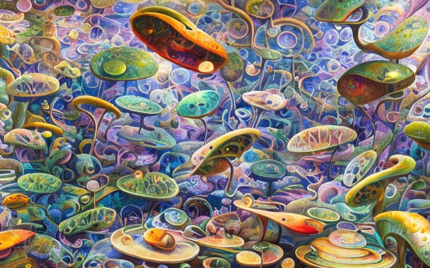

Το τετράποδο Μικρόβιουμ και το πειραματικό πιατάκι
Αρχική Σελίδα
Πίνακας Περιεχομένων
Ενότητα στο πιατάκι

Στο απέραντο τοπίο ενός πειραματικού εργαστηριακού πιάτου, ζούσε μια ποικιλία μονοκύτταρων βακτηρίων. Αυτά τα βακτήρια, γνωστά ως γένος Μικρόβιουμ, ήταν μια ανθεκτικότατη αποικία. Είχαν εκτεθεί σε επιθέσεις αντιβιοτικών και σε σκληρότατες περιβαλλοντικές συνθήκες.
Μια μέρα, καθώς κολυμπούσαν στο υγρό διάλυμα, συνάντησαν μπροστά τους ένα μεγάλο και τρομακτικό μονοκύτταρο βακτηρίο. Ήταν διαφορετικού γένους βακτήριο, και τα βακτήρια Μικρόβιουμ φαίνοταν ως νάνοι μπροστά του. Τα βακτήρια Μικρόβιουμ ήταν φοβισμένα, γιατί ήξεραν ότι αυτό το μεγάλο και τρομακτικό κύτταρο είχε την δυνατότητα να τα φάει.
Αλλά τα κύτταρα Μικρόβιουμ δεν απογοητεύοταν εύκολα. Μαζεύτηκαν όλα μαζί, χρησιμοποιώντας τις γλοιώδεις μεμβράνες τους ώστε να συσσωρευτούν σε μια μεγάλη και ογκώδη αποικία. Ήξεραν ότι ενώνοντας τα περιβλήματά τους, θα μπορούσαν να γίνουν μεγαλύτεροι από το μεγάλο μονοκύτταρο βακτήριο, ίσως ακόμη και να το υπερνικήσουν.
Καθώς ενώθηκαν, τα κύτταρα Μικρόβιουμ μεταμορφώθηκαν σε έναν πολυκύτταρο οργανισμό. Διαμoρφώθηκαν σε μια σφαιρική δομή, με ένα προστατευτικό στρώμα τοίχους να επικαλύπτει το εξωτερικό τους. Προχώρησαν αργά και σταθερά προς το μεγάλο και τρομακτικό βακτήριο, έτοιμοι να αντιμετωπίσουν την πρόκληση.
Το μεγάλο και τρομακτικό βακτήριο είδε την αποικία του Μικρόβιουμ να πλησίαζει και οπισθοχώρησε φοβισμένο. Πρώτη φορά συνάντησε τέτοιο θέαμα και δεν ήξερε πώς να αντιδράσει. Η αποικία του Μικρόβιουμ, ενθαρρυμένη από τη νέα της δύναμη, επιτέθηκε στο μεγάλο και τρομακτικό κυτταρο με όλη της τη δύναμη. Το χτύπησαν με τις γλοιώδεις μεμβράνες τους, αργά αλλά σταθερά κατατρώγοντάς το.
Η μάχη μαίνοταν για ώρες, αλλά τελικά, η αποικία Μικρόβιουμ βγήκε νικήτρια. Το μεγάλο και τρομακτικό κύτταρο νικήθηκε και η αποικία του Μικρόβιουμ είχε αποδείξει ότι ακόμη και ο μικρότερος οργανισμός μπορούσε να θριαμβεύσει έναντι του μεγαλύτερου.
Κυτταρική διαφοροποίηση

Μετά τη νίκη τους εναντίον του μεγάλου και τρομακτικού κύττάρου, η αποικία Μικρόβιουμ συνέχισε να κολυμπάει στο πιατάκι πειραματισμού. Ήταν ασφαλείς στο αποστειρωμένο περιβάλλον και δεν είχαν εχθρούς να ανησυχούν. Είχαν γίνει δυνατότεροι και ανθεκτικότεροι, και η νεοανακαλυφθείσα ενότητά τους απλώς τους προσέδιδε πιο πολύ δύναμη ακόμα.
Καθώς κολυμπούσαν, παρατήρησαν κάτι περίεργο σε ένα από τα κύτταρά τους. Αυτό το κύτταρο, που ήταν λίγο μεγαλύτερο από τα άλλα, είχε ένα περίεργο σχήμα. Η μεμβράνη του ήταν ελαφρώς πιο παχιά, και είχε προεξοχές που έμοιαζαν με στόμα και ώτα. Τα άλλα κύτταρα Μικρόβιουμ ήταν περίεργα και ρώτησαν το κύτταρο τι συνέβαινε.
Το κύτταρο, που ήταν ο επικεφαλής της αποικίας Μικρόβιουμ, εξήγησε ότι είχε υποστεί μεταμόρφωση. Είχε αναλάβει το ρόλο του αρχηγού της αποικίας και το σχήμα του είχε αλλάξει για να αντικατοπτρίζει αυτό. Είχε μεγαλώσει παχύτερες μεμβράνες και προεξοχές που λειτουργούσαν σαν στόμα, επιτρέποντάς του να επικοινωνεί και να κατευθύνει τα άλλα κύτταρα.
Τα άλλα κύτταρα Μικρόβιουμ έμειναν έκπληκτα με αυτόν τον μετασχηματισμό. Δεν είχαν ξαναδεί κάτι παρόμοιο. Ρώτησαν το επικεφαλής κύτταρο πώς το κατάφερε, και τους εξήγησε ότι χρησιμοποίησε μια διαδικασία που ονομάζεται κυτταρική διαφοροποίηση. Ενεργοποιώντας ορισμένα γονίδια, είχε πυροδοτήσει μία αλυσιδωτή βιοχημική αντίδραση που προκάλεσε την αλλαγή του σχήματος και της λειτουργίας του.
Η αποικία του Μικρόβιουμ μαγεύτηκε από αυτή τη διαδικασία και αποφάσισαν να τη δοκιμάσουν οι ίδιοι. Πειραματίστηκαν με διαφορετικούς συνδυασμούς γονιδίων, προσπαθώντας να πυροδοτήσουν διαφορετικούς τύπους διαφοροποίησης. Διαπίστωσαν ότι ενεργοποιώντας ορισμένα γονίδια, μπορούσαν να δημιουργήσουν κύτταρα με διαφορετικά σχήματα και λειτουργίες.
Τελικά, συμφώνησαν σε μια διαμόρφωση που λειτουργούσε καλύτερα για αυτούς. Το επικεφαλής κύτταρο παρέμεινε ως αρχηγός, με τρία κύτταρα ως χέρια και μόνο ένα ως πόδι. Αυτή η διαμόρφωση τους επέτρεψε να μετακινούνται αποτελεσματικά και να επικοινωνούν αποτελεσματικά. Ονόμαζαν τους εαυτούς τους τετράποδα Μικρόβιουμ, από τα τετράποδα πλάσματα της αρχαιότητας.
Καθώς κολυμπούσαν τριγύρω, το Μικρόβιουμ τετράποδο συνάντησε άλλες αποικίες βακτηρίων. Έμειναν έκπληκτοι με το πόσο ποικιλόμορφος και πολύπλοκος ήταν ο μικροβιακός κόσμος. Έμαθαν νέα πράγματα από κάθε συνάντηση και τα ενσωμάτωσαν στον δικό τους γενετικό κώδικα. Γίνονταν όλο και πιο εξελιγμένοι κάθε μέρα που περνούσε.
Μια μέρα, καθώς εξερευνούσαν μια νέα περιοχή του πιάτου πειραματισμού, παρατήρησαν μια παράξενη λάμψη να πηγάζει από τη γωνία. Κολύμπησαν για να ερευνήσουν και διαπίστωσαν ότι η λάμψη προερχόταν από ένα κομμάτι φωταυγών βακτηρίων. Έμειναν έκπληκτοι από την ομορφιά της λάμψης και αποφάσισαν να την ενσωματώσουν στον δικό τους γενετικό κώδικα.
Χρησιμοποιώντας τις νέες γνώσεις τους για την κυτταρική διαφοροποίηση, ενεργοποίησαν τα γονίδια που θα τους επέτρεπαν να παράγουν τη δική τους φωταύγεια. Έλαμπαν ένα έντονο πράσινο, φωτίζοντας ολόκληρο το πιατάκι.
Το δίλημμα της προσαρμογής

Το κεφάλι του τετράποδου Μικρόβιουμ κοίταξε κάτω τα τρία χέρια και αναστέναξε. “Ακούστε, παιδιά, πρέπει να κάνουμε μια αλλαγή. Χρειαζόμαστε δύο πόδια για να κινηθούμε αποτελεσματικά. Δεν μπορούμε να συνεχίσουμε να κολυμπάμε με ένα μόνο πόδι. Άρα, ένας από εσάς θα πρέπει να γίνει πόδι.”
Τα χέρια κοιτάχτηκαν με δυσπιστία. “Πόδι; Πλάκα μου κάνεις;” είπε ένας από αυτούς. “Δεν θέλω να γίνω ένα βρωμερό πόδι. Δεν συμφωνήσαμε εξ αρχής!”
Το κεφάλι κούνησε επιτακτικά τη μεμβράνη του. “Ξέρω ότι δεν είναι ιδανικό, αλλά πρέπει να προσαρμοστούμε στο περιβάλλον μας. Επιπλέον, δεν μπορούμε να συνεχίσουμε να μαλώνουμε έτσι. Είμαστε μια ομάδα και πρέπει να συνεργαστούμε αν θέλουμε να επιβιώσουμε.”
Τα χέρια συνέχισαν να μαλώνουν μεταξύ τους, το καθένα να επιμένει ότι δεν μπορεί να γίνει πόδι. «Δεν το κάνω», είπε ένας από αυτούς. “Δεν θυσιάζω το σχήμα και τη λειτουργία μου μόνο και μόνο για να έχουμε δύο πόδια. Αυτό είναι γελοίο.”
Το κεφάλι του τετράποδου Μικρόβιουμ αναστέναξε ξανά. “Εντάξει, εντάξει. Εάν κανένας από εσάς δεν είναι πρόθυμος να γίνει πόδι, τότε πρέπει να πάρω την απόφαση για εσάς. Δεν είναι εύκολο να είμαι ηγέτης. Μερικές φορές αναγκάζομαι να πάρω δύσκολες αποφάσεις.”
Και με αυτό, το κεφάλι ενεργοποίησε μια σειρά γονιδίων που έκαναν το ένα από τα χέρια να μεταμορφωθεί σε πόδι. Τα άλλα χέρια κοιτούσαν με τρόμο καθώς ο πρώην συνάποικός τους έγινε κάτι εντελώς διαφορετικό.
Το νέο πόδι ήταν δυσαρεστημένο για τον νέο του ρόλο στο τετράποδο Μικρόβιουμ. Βρωμούσε, μύριζε και ένιωθε άβολα. «Εδώ είναι χάλια», είπε. “Μισώ να είμαι πόδι. Γιατί δεν μπορούσε κάποιος από εσάς να το κάνει;”
Τα άλλα χέρια δεν ανταποκρίθηκαν. Ένιωθαν ένοχοι που δεν ανέβαιναν για να γίνουν οι ίδιοι το πόδι και ήξεραν ότι το νέο πόδι ήταν δυστυχισμένο λόγω του εγωισμού τους. Αποφάσισαν να συνεργαστούν καλύτερα στο μέλλον, για να αποφύγουν καταστάσεις όπως αυτή.
Το επιστημονικό πεπρωμένο

Το τετράποδο Μικρόβιουμ κολυμπούσε στο πιατάκι πειραματισμού, νιώθοντας περήφανο για τη νέα του διαμόρφωση με δύο πόδια. Ξαφνικά, η πόρτα του εργαστηρίου άνοιξε και μια ριπή αέρα όρμησε μέσα. Πριν το καταλάβουν, δέχθηκαν επίθεση από μια ισχυρή χημική ουσία.
Η ουσία ήταν τόσο ισχυρή που διέλυσε το ένα πόδι και το ένα χέρι τους. Το Μικρόβιουμ τετράποδο προσπάθησε να κολυμπήσει μακριά, αλλά ήταν πολύ αργά. Το χημικό ήταν πολύ ισχυρό και ήταν αβοήθητοι εναντίον του.
Καθώς αποσυντίθοταν, το τετράποδο Μικρόβιουμ δεν μπορούσε παρά να αναρωτηθεί γιατί υποβλήθησαν σε αυτή την τιμωρία. Δεν είχαν κάνει τίποτα κακό, κι όμως καταστρέφονταν χωρίς έλεος.
Τις τελευταίες τους στιγμές, σήκωσαν το βλέμμα τους στους επιστήμονες που τους παρατηρούσαν. Αναγνώρισαν καθαρά την χαρά και ευτυχία στα μάτια των επιστημόνων καθώς συνειδητοποίησαν ότι το πείραμά τους πέτυχε.
Αλλά το τετράποδο Μικρόβιουμ είχε μάθει κάτι σημαντικό. Είχαν μάθει ότι ακόμη και η πιο ισχυρή και ενωμένη ομάδα μπορούσε να καταστραφεί από εξωτερικές δυνάμεις. Είχαν μάθει ότι μερικές φορές, παρά τις όσες προσπάθειες, τα πράγματα δεν πάνε καλά.
Καθώς οι μεμβράνες τους διελύοντο, το τετράποδο Μικρόβιουμ συνειδητοποίησε ότι ήταν μέρος κάτι μεγαλύτερο από τον εαυτό τους. Ήταν μέρος ενός μεγάλου πειράματος, και παρόλο που τους κόστισε την ζωή τους, είχαν συμβάλει στην πρόοδο της επιστήμης.
Και έτσι, ακόμη και στον θάνατο, το τετράποδο Μικρόβιουμ ένιωσε μια αίσθηση υπερηφάνειας και απώτερου σκοπού. Θυσίασαν τη ζωή τους ώστε να συμβάλλουν τα μέγιστα στον κόσμο της μικροβιολογίας.
Μία ιατρική ανακάλυψη

Οι δύο επιστήμονες κοιτάχτηκαν με δυσπιστία. Δεν μπορούσαν να πιστέψουν αυτό που μόλις είχαν παρατηρήσει. Η υγρή ουσία αποσυνέθεσε το τετράποδο Μικρόβιουμ στα επιμέρους αμινοξέα.
“Ποιος νοιάζεται ποια κύτταρα σκοτώνει, σωστά;!” αναφώνησε ένας από τους επιστήμονες.
“Ακριβώς!” απάντησε ο άλλος. “Αυτή ίσως είναι η επόμενη μεγάλη επιτυχία στα φαρμακευτικά προϊόντα! Δεν έχει σημασία αν σκοτώνει μερικά κύτταρα παραπάνω, οι άνθρωποι λατρεύουν μια ουσία που σκοτώνει κύτταρα!”
Οι δύο επιστήμονες συντάχθηκαν μεταξύ τους και έσπευσαν στο εργαστήριό τους για να αρχίσουν να εργάζονται στην συνταγή για τη νέα αυτή ουσία. Ήξεραν ότι επρόκειτο να είναι μια επιτυχία στην αγορά.
Καθώς δούλευαν, δεν μπορούσαν παρά να νιώσουν μια αίσθηση ενθουσιασμού. Διανοίγεται μία πρώτης τάξεως ευκαιρία μπροστά τους. Επρόκειτο να κάνουν όνομα για τον εαυτό τους στη φαρμακοβιομηχανία.
Οι μέρες έγιναν εβδομάδες και οι εβδομάδες σε μήνες. Τελικά, συνέθεσαν την χημική συνταγή για τη νέα ουσία. Την δοκίμασαν σε διάφορα κύτταρα και διαπίστωσαν ότι τα σκότωσε σχεδόν όλα. Ήξεραν ότι κατείχαν κάτι το ιδιαίτερο.
Έσπευσαν να κατοχυρώσουν με δίπλωμα ευρεσιτεχνίας την συνταγή και να την παρουσιάζουν σε φαρμακευτικές εταιρείες. Μέσα σε εβδομάδες, συγκέντρωσαν αρκετές προσφορές. Συμφώνησαν σε μια συμφωνία με μια μεγάλη φαρμακευτική εταιρεία που υποσχέθηκε να τους κάνει και τους δύο εκατομμυριούχους.
Καθώς γιόρταζαν την επιτυχία τους, οι δύο επιστήμονες δεν μπορούσαν παρά να σκεφτούν το τετράποδο Μικρόβιουμ. Ένιωθαν ένα τσίμπημα ενοχής γνωρίζοντας ότι η επιτυχία τους είχε γίνει εις βάρος αυτών των μικροσκοπικών πλασμάτων.
Αλλά γρήγορα ξέχασαν αυτές τις σκέψεις. Ήταν στην κορυφή του κόσμου τώρα, και τίποτα δεν τους σταματάει. Τα είχαν καταφέρει στον κόσμο των φαρμακευτικών προϊόντων και επρόκειτο να απολαύσουν κάθε λεπτό .